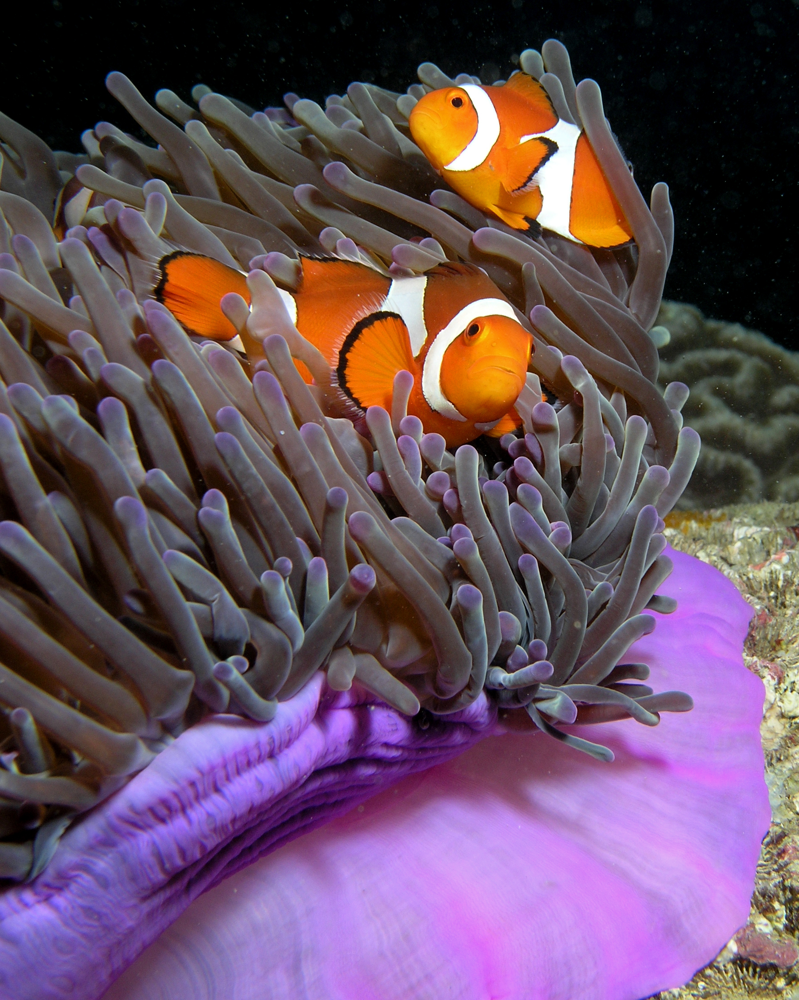

es uno de los mas conocidos por el mundo, incluso existe dos peliculas animadas donde e potagonista(buscando a nemo y buscando a dory).
tiene las escamas anaranjadas con una linea curvada blanca en medio del torzo, cola ycuello en forma vertical, en las puntas de la cola y aleas tiene un bordeado nugruzco.
Los pecez payaso viven en anemonas donde ellas los protegen de los depredadores.
dos pecez payaso en una enmona
Amphiprion ocellaris